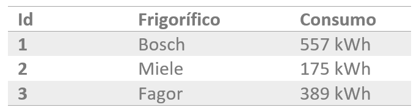
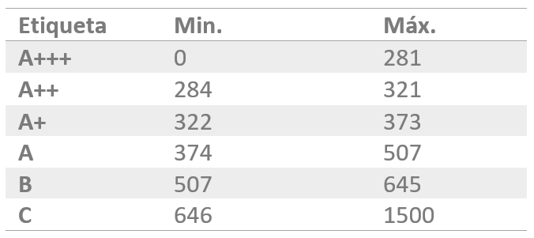

HaB: Introducción a SQL
Por: Fernando Batlle López
Creación tablas SQL
LENGUAJE DE MANIPULACIÓN DE DATOS: DML
Inserción de datos
Para los ejemplos se utilizará la ya conocida tabla "usuario".
CREATE TABLE IF NOT EXISTS usuario (
id INT AUTO_INCREMENT,
nombre VARCHAR(50) NOT NULL,
apellido_1 VARCHAR(50) NOT NULL,
apellido_2 VARCHAR(50) NOT NULL,
email VARCHAR(50) NOT NULL,
fecha_nacimiento DATE,
activo TINYINT DEFAULT 1,
empleado TINYINT DEFAULT 0,
notas TEXT
);
Inserción de datos
El comando INSERT de SQL permite introducir datos en una tabla.
Se requiere el permiso INSERT para la tabla.
Existen varias sintaxis para este comando:
INSERT INTO tbl_name (col_name1 [, col_name2] ...)
VALUES
(value_col1 [,value_col1] ...)
[,()] ...
La ejecución del comando INSERT retorna el número de registros afectados:
Records: N1 Duplicates: N2 Warnings: N3
Inserción de datos
Ejemplo para la tabla "usuario" con esta sintaxis:
mysql> INSERT INTO usuario (nombre, apellido_1, apellido_2, email, fecha_nacimiento, empleado)
VALUES("Laura", "Master", "Rockefeller", "laura@allthemoneybank.com", "1971-03-04", 1),
("Joseba", "Loco", "Motora", "joseba@allthemoneybank.com", "1982-10-24", 0);
Se especifican sólo las columnas que se desean rellenar.
Los valores deben corresponderse con el orden de las columnas.
Si no se especifica una columna definida bajo NOT NULL, el sistema retornará error, ya que se convierte en un campo obligatorio.
Los campos con AUTOINCREMENT no tienen que incluirse.
Inserción de datos
Hay otra forma similar a la anterior, donde no se tiene que especificar las columnas.
En ese caso se deben especificar todos los valores en el orden de aparición en la tabla.
Existen varias sintaxis para este comando:
INSERT INTO tbl_name VALUES
(value_col1 [,value_col1] ...)
[,()] ...
Inserción de datos
Ejemplo para la tabla "usuario" con esta sintaxis:
mysql> INSERT INTO usuario VALUES
(null, "Laura", "Master", "Rockefeller", "laura@atm.com", "1971-03-04", 1, DEFAULT, null, DEFAULT),
(null, "Joseba", "Loco", "Motora", "joseba@atm.com", "1982-10-24", DEFAULT, DEFAULT, null, DEFAULT);
Se incluyen todos los valores, incluidos los que tienen valor por defecto.
Si se desea que un campo tome el valor por defecto, se debe usar DEFAULT como valor del campo.
Los campos con AUTOINCREMENT se especifican con el valor "null".
Si no se especifican todos los valores, el sistema genera un error:
Error Code: 1136. Column count doesn't match value count at row 1
Inserción de datos
Otra sintaxis para añadir un dato.
No permite la inserción de múltiples registros.
Sólo se tienen que especificar los campos deseados y los obligatorios.
INSERT INTO tbl_name
SET column1=value [, column2=value]
Inserción de datos
Ejemplo para la tabla "usuario" con esta sintaxis:
mysql> INSERT INTO usuario set nombre="Joseba", apellido_1="Loco", apellido_2="Motora",
email="joseba@atm.com", fecha_nacimiento="1982-10-24";
Inserción de datos
El último formato para la inserción, se basa en la cláusula SELECT.
En ocasiones puede ser útil almacenar registros computados de otras tablas o funciones.
La cláusula SELECT debe devolver la misma cantidad y tipo de campos que los definidos en la tabla.
Se requiere el permiso SELECT.
INSERT INTO tbl_name
[(col_name [, col_name] ...)]
{SELECT ... | TABLE table_name}
Inserción de datos
Ejemplo para la tabla "usuario" con esta sintaxis:
mysql> INSERT INTO usuario (nombre, apellido_1, apellido_2, email, fecha_nacimiento, empleado)
SELECT "Joseba", "Loco", "Motora", "joseba@allthemoneybank.com", "1982-10-24", 0;
En este caso no usamos ninguna tabla externa, pero se podría usar perfectamente.
mysql> INSERT INTO usuario (nombre, apellido_1, apellido_2, email, fecha_nacimiento, empleado)
SELECT nombre, apellido_1, apellido_2, email, fecha_nacimiento, 0 FROM usuarios_temporales;
Actualización de datos
El comando UPDATE de SQL permite modificar datos en una tabla.
Se requiere el permiso UPDATE para la tabla.
Se requiere el permiso SELECT si se va a usar la cláusula WHERE.
UPDATE table_reference
SET column1=value [, column2=value] ...
[WHERE where_condition]
Si no se expresa la cláusula WHERE, todos los registros serán actualizados.
La ejecución del comando UPDATE retorna el número de registros afectados.
Actualización de datos
Modificación de los registros de la tabla "usuario":
mysql> UPDATE usuario SET email="loco@allthemoneybank.com" where id=3;
Si se desea afectar a todos los usuarios, no se especifica la cláusula WHERE:
mysql> UPDATE usuario SET empleado=0;
Borrado de datos
El comando DELETE de SQL permite borrar datos en una tabla.
Se requiere el permiso DELETE para la tabla.
Se requiere el permiso SELECT si se va a usar la cláusula WHERE.
DELETE FROM table_reference
[WHERE where_condition]
Si no se expresa la cláusula WHERE, todos los registros serán borrados.
La ejecución del comando DELETE retorna el número de registros afectados.
Borrado de datos
Borrado de los registros de la tabla "usuario":
mysql> DELETE FROM usuario where id=3;
Si se desea afectar a todos los usuarios, no se especifica la cláusula WHERE:
mysql> DELETE FROM usuario;
Aunque es mejor usar la cláusula TRUNCATE para merjorar el rendimiento:
mysql> TRUNCATE TABLE usuario;
Borrado de datos
Hay que tener en cuenta que el borrado de un registro no puede provocar fallos de integridad.
Además, la opción de integridad ON DELETE CASCADE (clave secundaria o foránea) hace que no sólo se borren los registros indicados sino todos los relacionados.
Transacciones
Una transacción es un conjunto de tareas relacionadas que se realizan de forma satisfactoria o incorrecta como una unidad.
Las transacciones se confirman o se anulan.
Para que una transacción se confirme se debe garantizar la permanencia de los cambios efectuados en los datos.
Los cambios deben conservarse aunque el sistema se bloquee o tengan lugar otros eventos imprevistos.
Su principio: ACID.
- Atomicidad
- Consistencia
- Aislamiento
- Durabilidad
Garantizan un comportamiento predecible. Son proposiciones de todo o nada.
Atomicidad
Una transacción es una unidad de trabajo el cual se realiza en su totalidad o no se realiza en ningún caso.
Las operaciones asociadas a una transacción comparten normalmente un objetivo común y son interdependientes.
Si el sistema ejecutase únicamente una parte de las operaciones, podría poner en peligro el objetivo final de la transacción.
Coherencia
Una transacción es una unidad de integridad porque mantiene la coherencia de los datos.
Transformando un estado coherente de datos en otro estado de datos igualmente coherente.
Si el sistema ejecutase únicamente una parte de las operaciones, podría poner en peligro el objetivo final de la transacción.
Aislamiento
Una transacción es una unidad de aislamiento.
Las transacciones concurrentes se comportan como si cada una fuera la única transacción que se ejecuta en el sistema.
Una transacción nunca debe ver las fases intermedias de otra transacción.
Durabilidad
Una transacción también es una unidad de recuperación.
Si una transacción se realiza satisfactoriamente, el sistema garantiza que sus actualizaciones se mantienen aunque el equipo falle inmediatamente después de la confirmación.
Transacciones
Una transacción está formada por una serie de instrucciones DML.
Una transacción comienza con la primera instrucción DML que se ejecute.
Y finaliza:
- Bien con una operación COMMIT (si la transacción se confirma).
- O bien o una operación ROLLBACK (si la operación se cancela).
Excepción: cualquier instrucción DDL o DCL da lugar a un COMMIT implícito, es decir todas las instrucciones DML ejecutadas hasta ese instante pasan a ser definitivas.
AUTOCOMMIT
Una de las maneras de hacer uso de transacciones es mediante la propiedad SQL AUTOCOMMIT.
Si está activada, después de cada instrucción DML se hará un COMMIT (se confirma la operación inmediatamente).
Por contra, si está desactivada será el usuario o el programa, el encargado de realizar un COMMIT o ROLLBACK manual.
Para saber el estado en el que se encuentra dicha propiedad se usa la siguiente cláusula:
mysql> SHOW AUTOCOMMIT;
AUTOCOMMIT
Para desactivarlo se usa la siguiente instrucción:
mysql> SET AUTOCOMMIT=0;
Para reactivarla se debe reemplazar el valor 0 por 1.
mysql> SET AUTOCOMMIT=1;
AUTOCOMMIT es una propiedad de sesión y debe establecerse para cada una de ellas.
START TRANSACTION
Existe otra instrucción que permite la ejecución de transacciones sin tener que modificar AUTOCOMMIT.
START TRANSACTION
BEGIN [WORK]
COMMIT
ROLLBACK
Ejemplo:
START TRANSACTION;
UPDATE table1 SET info="new info" WHERE type=2;
UPDATE table2 SET summary="new summary" WHERE type=1;
COMMIT;
COMMIT
La instrucción COMMIT hace que los cambios realizados por la transacción sean definitivos, irrevocables.
Se dice que tenemos una transacción confirmada.
Sólo se debe utilizar si estamos de acuerdo con los cambios.
El cierre correcto de la sesión da lugar a un COMMIT, aunque siempre conviene ejecutar explícitamente esta instrucción a fin de asegurarnos de lo que hacemos.
ROLLBACK
Esta instrucción regresa a la instrucción anterior al inicio de la transacción, normalmente el último COMMIT, la última instrucción DDL o DCL o al inicio de sesión.
Se dice que tenemos una transacción cancelada.
Anula definitivamente los cambios.
Un abandono de sesión incorrecto o un problema de comunicación o de caída del sistema dan lugar a un ROLLBACK implícito.
SAVEPOINT
Esta instrucción permite establecer un punto de ruptura.
El problema de la combinación ROLLBACK/COMMIT es que un COMMIT acepta todo y un ROLLBACK anula todo.
SAVEPOINT permite señalar un punto intermedio entre el inicio de la transacción y la situación actual.
SAVEPOINT identifier
ROLLBACK [WORK] TO [SAVEPOINT] identifier
ROLLBACK
COMMIT
ROLLBACK [WORK] TO [SAVEPOINT] retorna hasta el SAVEPOINT deseado sin acabar la transacción.
Mientras que un ROLLBACK a secas sí finaliza la sesión.
Ejemplo de transacción compleja
CREATE TABLE tabla (fecha DATE);
START TRANSACTION;
INSERT INTO tabla VALUES ('2020/01/01');
INSERT INTO tabla VALUES ('2020/02/01');
SAVEPOINT febrero;
INSERT INTO tabla VALUES ('2020/03/01');
INSERT INTO tabla VALUES ('2020/04/01');
SAVEPOINT abril;
INSERT INTO tabla VALUES ('2020/05/01');
ROLLBACK TO SAVEPOINT febrero;
COMMIT;
CONSULTAS
Cláusula SELECT
La cláusula SELECT permite:
- Obtener datos de ciertas columnas de una tabla (proyección).
- Obtener registros (filas) de una tabla de acuerdo con ciertos criterios (selección).
- Mezclar datos de tablas diferentes (asociación, join).
Cláusula SELECT
La sintaxis básica del comando SELECT es la siguiente:
SELECT
[ALL | DISTINCT ]
* | select_expr [[AS] alias ] [, select_expr] ...
[FROM table_references]
[WHERE where_condition]
[GROUP BY {col_name | expr}, ... ]
[HAVING where_condition]
[ORDER BY {col_name | expr}
[ASC | DESC], ...]
[LIMIT {[offset,] OFFSET offset}]
}
Donde:
- ALL. Muestra todos los valores, incluidos los duplicados.
- DISTINCT. Hace que no se muestren los valores duplicados.
- *. El asterisco significa que se seleccionan todas las columnas.
- select_expr:
- Columna: Es el nombre de una columna de la tabla que se desea mostrar.
- expresión. Una expresión válida SQL.
- Además select_expr puede asignarle un alias: [[AS] nombre ].
Cláusula SELECT
- FROM. Indica qué tabla(s) o subconsultas se deben utilizar.
- WHERE. Las condiciones que deben cumplir para ser seleccionados.
- GROUP BY. Utilizado para agrupar resultados basados en una o varias columnas.
- HAVING. Utilizado para agrupar resultados basados en una o varias columnas.
- ORDER BY. Se usa para filtrar elementos con una cierta condición posterior a su agrupación.
- LIMIT. El número de elementos máximos a filtrar.
- OFFSET. El número de elementos que saltar .
Cálculos
Cálculos Aritméticos
Los operadores + (suma), - (resta), * (multiplicación) y / (división), se pueden utilizar para hacer cálculos en las consultas.
Cuando se utilizan como expresión en una consulta SELECT, no modifican los datos originales.
SELECT nombre, precio, precio*1.16 AS "Precio + IVA" FROM articulos;
Precedencia
La precendencia de operadores se muestra en la siguiente tabla, de mayor a menor precendencia.
Operadores en la misma línea, tienen la misma precedencia.
INTERVAL
BINARY, COLLATE
!
- (unary minus), ~ (unary bit inversion)
^
*, /, DIV, %, MOD
-, +
<<, >>
&
|
= (comparison), <=>, >=, >, <=, <, <>, !=, IS, LIKE, REGEXP, IN, MEMBER OF
BETWEEN, CASE, WHEN, THEN, ELSE
NOT
AND, &&
XOR
OR, ||
= (asignación), :=
Condiciones
Se puede realizar consultas que restrinjan los datos de salida de las tablas.
Para ello se utiliza la cláusula WHERE.
Esta cláusula permite colocar una condición que han de cumplir todos los registros que queremos que se muestren.
Las filas que no la cumplan no aparecerán en la ejecución de la consulta.
SELECT nombre, precio FROM articulos WHERE cantidad > 2;
En el ejemplo, se filtran los artículoes que tengan una cantidad mayor que dos, pero esa cantidad no será retornada como resultado del SELECT ya que no se ha especificado dicha columna.
Operadores de comparación
Los resultados de comparación son: 1 (TRUE), 0 (FALSE), o NULL.
Funcionan con números y cadenas. Las cadenas son convertidos a números y viceversa cuando sea necesario.
Los siguiente operadores pueden ser usados para comparar no sólo operandos escalares, si no filas de operandos:
= > < >= <= <> !=
Con ellos podemos realizar comparaciones de igualdad, desigualdad...
Ejemplo de comparación de filas de operandos: (a, b) = (x, y) es equivalente a
(a = x) AND (b = y)
Operadores de comparación
expr BETWEEN min AND max
Si expr es mayor o igual que min y expr es menor o igual que max, devuelve 1, 0 en otro caso
expr NOT BETWEEN min AND max
Lo opuesto a la expresión anterior: NOT (expr BETWEEN min AND max)
expr IN (value,...)
Retorna 1 (true) si expr es igual en alguno de los valores de la lista de valores, sino retorna 0 (false).
expr NOT IN (value,...)
Lo opuesto a la expresión anterior: NOT (expr IN (value,...))
Operadores de comparación
IS boolean_value
Comprueba si el valor es igual al valor booleano, donde boolean_value puede ser TRUE, FALSE, o UNKNOWN.
IS NOT boolean_value es la función opuesta.
IS NULL
Comprueba si el valor es NULL.
IS NOT NULL retorna lo opuesto a la función.
ISNULL(expr)
Si expr es NULL, ISNULL() returna 1, 0 en otro caso.
Operadores de comparación
LIKE expr
El operador LIKE se usa sobre todo con textos, permite obtener registros cuyo valor en un campo cumpla una condición textual.
LIKE utiliza una cadena que puede contener estos símbolos:
"%" permite una serie de caractares, es decir un comodín de múltiples caracteres.
SELECT nombre FROM usuario WHERE email LIKE "%@allthemoneybank.com"
Retornará todos los emails que acaben de esa manera.
"_" un único caracter de comodín. P.e: LIKE ""
SELECT campo FROM tabla WHERE campo LIKE "_eon"
Retornaría Leon y Peon pero no Parteon.
Operadores lógicos
| Nombre | Ejemplo |
|---|---|
| AND, && | condición1 AND condición2: Cierto sólo en caso de que las 2 condiciones sean ciertas |
| NOT, ! | Niega el valor |
| OR, || | condición1 OR condición2: Cierto en todos los casos, salvo que las 2 condiciones sean falsas |
| XOR | condición1 XOR condición2: Cierto en los casos en que sean distintos. |
En SQL, todos los operadores lógicos retornan TRUE, FALSE, o NULL (UNKNOWN)
Los operadores lógicos junto con el uso de paréntesis permiten combinar condiciones simples obteniendo otras más complejas.
mysql> SELECT 1 AND 1, 0 AND 1,1 OR 1, 0 OR 1,1 XOR 1, 0 XOR 1;
-> 1, 0, 1, 1, 0, 1
Operadores de control de flujo
| Nombre | Descripción |
|---|---|
| CASE | Operador Case |
| IF() | Constructor If/else |
| IFNULL() | Constructor NULL If/else |
| NULLIF() | Retorna NULL si expr1 = expr2 |
Los resultados de comparación son: 1 (TRUE), 0 (FALSE), o NULL.
Operadores de control de flujo
Case:
CASE
WHEN condition THEN result
[WHEN condition THEN result ...]
[ELSE result]
END
mysql> SELECT CASE WHEN 1>0 THEN 'true!' ELSE 'false!' END;
-> 'true!'
IF(expr1,expr2,expr3)
SI expr1 es TRUE (es decir, expr1 <> 0 y expr1 <> NULL), IF() retorna expr2. En otro caso, retorna expr3.
mysql> SELECT IF(1>2,2,3);
-> 3
mysql> SELECT IF(1<2,'yes','no');
-> 'yes'
Operadores de control de flujo
IFNULL(expr1,expr2)
SI expr1 no es NULL, IFNULL() retorna expr1; en otro caso, expr2.
mysql> SELECT IFNULL(1,0);
-> 1
mysql> SELECT IFNULL(NULL,10);
-> 10
mysql> SELECT IFNULL(1/0,10);
-> 10
NULLIF(expr1,expr2)
Retorna NULL si expr1 = expr2 es true, en otro caso, expr1.
mysql> SELECT NULLIF(1,1);
-> NULL
mysql> SELECT NULLIF(1,2);
-> 1
Subconsultas
Se trata de una técnica que permite utilizar el resultado de una tabla SELECT en otra consulta SELECT.
Entre otros problemas, permite solucionar los que el mismo dato aparece dos veces. La sintaxis es:
SELECT lista_expresiones
FROM tablas
WHERE expresión OPERADOR
( SELECT lista_expresiones
FROM tablas );
Se puede colocar el SELECT dentro de las cláusulas WHERE, HAVING o FROM.
El operador puede ser >,<,>=,<=,!=, = o IN.
Subconsultas
-- Obtiene los empleados cuyas pagas sean inferiores a lo que gana Laura.
SELECT nombre_empleado, paga
FROM EMPLEADOS
WHERE paga < ( SELECT paga
FROM EMPLEADOS
WHERE nombre_empleado='Laura');
La subconsulta no tiene porqué restringirse a la misma tabla.
SELECT * FROM usuario WHERE id != (SELECT id FROM cuenta LIMIT 1);
Subconsultas
Se puede utiliar el operador IN (y su negación). P.e:
SELECT modelo FROM vehiculos WHERE matricula IN (SELECT matricula FROM multas);
Obtiene todos los vehículos multados.
También se puede usar el operador ALL. P.e:
SELECT nombre, sueldo FROM empleados WHERE sueldo >= ALL (SELECT sueldo FROM empleados);
Obtiene el empleado que más cobra.
Ordenación
El orden inicial de los registros obtenidos por un SELECT viene dado por el orden en el que fueron introducidos.
Para ordenar en base a otros criterios, se utiliza la cláusula ORDER BY.
En esa cláusula se coloca una lista de campos que indica la forma de ordenar.
Se ordena primero por el primer campo de la lista.
Si hay coincidencias por el segundo, y así sucesivamente.
Colocando la palabra ASC se ordenará por orden ascendente.
DESC se ordenará por orden descendente.
SELECT * FROM usuario WHERE empleado = 1 ORDER BY apellido_1, apellido_2 ASC;
Funciones
Permiten realizar cálculos avanzados, o bien facilitar la escritura de ciertas expresiones.
La mayoría de funciones reciben datos para poder operar (parámetros)
Y devuelven un resultado, que depende de los parámetros enviados a la función.
Los argumentos se pasan entre paréntesis.
Son demasiadas para entrar en detalle en cada una de ellas.
Si se desea, se puede consultar la guía de MySQL de funciones.
Anteriormente se mencionaron ciertas funciones. A continuación se mostrán otras.
Funciones numéricas
| Nombre | Descripción | Ejemplo | Resultado |
|---|---|---|---|
| %, MOD | Operador Modulo | SELECT 5 % 3; | 2 |
| ABS() | Valor absoluto | SELECT ABS(-23); | 23 |
| CEIL() | Devuelve el menor valor entero no inferior al argumento | SELECT CEIL(5.8); | 6 |
| DIV | División entera | SELECT 10 DIV 3; | 3 |
| EXP() | Eleva e a x | SELECT EXP(2); | 7.389 |
| FLOOR() | Devuelve el mayor valor entero no superior al argumento | SELECT FLOOR(5.8) | 5 |
| MOD() | Devuelve el resto | SELECT MOD(9,5); | 4 |
| PI() | Devuelve PI | SELECT PI(); | 3.1415 |
| POWER(x, y) | Eleva el x a y | SELECT POWER(5, 3); | 125 |
| RAND(N) | Devuele un valor float aleatorio. N: semilla | SELECT RAND(); | 0.65 |
| ROUND(N,D) | Redondea el argumento. D: núm. decimales | SELECT ROUND(5.35, 1); | 5.4 |
| SIGN() | Devuele el signo del argumento | SELECT SIGN(-54); | -1 |
| SQRT() | División cuadrada | SELECT SQRT(2); | 5 |
| TRUNCATE() | Trunca un valor al número de decimales especificado | SELECT TRUNCATE(-1.999,1); | -1.9 |
Funciones de fechas
| Nombre | Descripción |
|---|---|
| ADDDATE() | Add time values (intervals) to a date value |
| ADDTIME() | Add time |
| CURDATE() | Return the current date |
| CURTIME() | Return the current time |
| DATE() | Extract the date part of a date or datetime expression |
| DATE_ADD() | Add time values (intervals) to a date value |
| DATE_FORMAT() | Format date as specified |
| DATE_SUB() | Subtract a time value (interval) from a date |
| DATEDIFF() | Subtract two dates |
| DAYNAME() | Return the name of the weekday |
| DAYOFMONTH() | Return the day of the month (0-31) |
| DAYOFWEEK() | Return the weekday index of the argument |
| DAYOFYEAR() | Return the day of the year (1-366) |
| EXTRACT() | Extract part of a date |
| FROM_DAYS() | Convert a day number to a date |
| HOUR() | Extract the hour |
| LAST_DAY | Return the last day of the month for the argument |
| MAKEDATE() | Create a date from the year and day of year |
| MAKETIME() | Create time from hour, minute, second |
| MICROSECOND() | Return the microseconds from argument |
| MINUTE() | Return the minute from the argument |
Funciones de fechas
| Nombre | Descripción |
|---|---|
| MONTH() | Return the month from the date passed |
| MONTHNAME() | Return the name of the month |
| NOW() | Return the current date and time |
| SEC_TO_TIME() | Converts seconds to 'hh:mm:ss' format |
| SECOND() | Return the second (0-59) |
| STR_TO_DATE() | Convert a string to a date |
| SUBTIME() | Subtract times |
| SYSDATE() | Return the time at which the function executes |
| TIME() | Extract the time portion of the expression passed |
| TIME_FORMAT() | Format as time |
| TIME_TO_SEC() | Return the argument converted to seconds |
| TIMEDIFF() | Subtract time |
| TIMESTAMP() | if 1 arg, this function returns the date or datetime expression; 2 ags, the sum of the arguments |
| TIMESTAMPADD() | Add an interval to a datetime expression |
| TIMESTAMPDIFF() | Subtract an interval from a datetime expression |
| TO_DAYS() | Return the date argument converted to days |
| TO_SECONDS() | Return the date or datetime argument converted to seconds since Year 0 |
| WEEK() | Return the week number |
| WEEKDAY() | Return the weekday index |
| WEEKOFYEAR() | Return the calendar week of the date (1-53) |
| YEAR() | Return the year |
| YEARWEEK() | Return the year and week |
Funciones de cadenas
| Nombre | Descripción |
|---|---|
| BIN() | Return a string containing binary representation of a number |
| BIT_LENGTH() | Return length of argument in bits |
| CHAR() | Return the character for each integer passed |
| CHAR_LENGTH() | Return number of characters in argument |
| CHARACTER_LENGTH() | Synonym for CHAR_LENGTH() |
| CONCAT() | Return concatenated string |
| CONCAT_WS() | Return concatenate with separator |
| ELT() | Return string at index number |
| FORMAT() | Return a number formatted to specified number of decimal places |
| FROM_BASE64() | Decode base64 encoded string and return result |
| INSERT() | Insert substring at specified position up to specified number of characters |
| INSTR() | Return the index of the first occurrence of substring |
| LEFT() | Return the leftmost number of characters as specified |
| LENGTH() | Return the length of a string in bytes |
| LOAD_FILE() | Load the named file |
| LOCATE() | Return the position of the first occurrence of substring |
| LOWER() | Return the argument in lowercase |
| LPAD() | Return the string argument, left-padded with the specified string |
| LTRIM() | Remove leading spaces |
| MATCH | Perform full-text search |
| MID() | Return a substring starting from the specified position |
Funciones de cadenas
| Nombre | Descripción |
|---|---|
| NOT REGEXP | Negation of REGEXP |
| ORD() | Return character code for leftmost character of the argument |
| QUOTE() | Escape the argument for use in an SQL statement |
| REGEXP | Whether string matches regular expression |
| REGEXP_INSTR() | Starting index of substring matching regular expression |
| REGEXP_LIKE() | Whether string matches regular expression |
| REGEXP_REPLACE() | Replace substrings matching regular expression |
| REGEXP_SUBSTR() | Return substring matching regular expression |
| REPEAT() | Repeat a string the specified number of times |
| REPLACE() | Replace occurrences of a specified string |
| REVERSE() | Reverse the characters in a string |
| RIGHT() | Return the specified rightmost number of characters |
| RLIKE | Whether string matches regular expression |
| RPAD() | Append string the specified number of times |
| RTRIM() | Remove trailing spaces |
| SPACE() | Return a string of the specified number of spaces |
| STRCMP() | Compare two strings |
| SUBSTRING() | Return the substring as specified |
| SUBSTRING_INDEX() | Return a substring from a string before the specified number of occurrences of the delimiter |
| TO_BASE64() | Return the argument converted to a base-64 string |
| TRIM() | Remove leading and trailing spaces |
| UPPER() | Convert to uppercase |
Funciones CAST
| Nombre | Descripción |
|---|---|
| BINARY | Convierte una cadena en una cadena binaria |
| CAST | Convierte un valor en un tipo especificado |
| CONVERT | Convierte un valor en un tipo especificado |
SELECT CONVERT('test' USING utf8mb4);
SELECT CONVERT(_latin1'Müller' USING utf8mb4);
SELECT CONVERT('test', CHAR CHARACTER SET utf8mb4) COLLATE utf8mb4_bin;
SELECT CAST('test' AS CHAR CHARACTER SET utf8mb4) COLLATE utf8mb4_bin;
Agrupaciones
En ocasiones, las tablas contienen información parcialmente duplicada (o información común entre varias filas).
Y puede ser de utilidad agrupar dichas filas, con el fin de realizar cálculos sobre ellas.
Para ello se utiliza la cláusula GROUP BY que permite indicar en base a qué registros se realiza la agrupación.
En este sentido GROUP BY indica qué columnas son las que se van utilizra para la agrupación.
Agrupaciones
Ejemplo básico.
Se crea una bbdd y una tabla .
CREATE DATABASE testeo CHARACTER SET="utf8mb4" COLLATE="utf8mb4_spanish_ci";
USE testeo;
CREATE TABLE ropa (
id INT UNSIGNED AUTO_INCREMENT,
tipo VARCHAR(20) NOT NULL,
talla VARCHAR(20) NOT NULL,
color VARCHAR(20) NOT NULL,
cantidad INT DEFAULT 0,
reservados INT DEFAULT 0,
CONSTRAINT ropa_pk PRIMARY KEY(id)
);
Agrupaciones
Y unos datos.
INSERT INTO ropa VALUES
(null, "pantalón", "xl", "beige", 100, 45),
(null, "camiseta", "l", "roja", 345, 132),
(null, "pantalón", "l", "beige", 89, 10),
(null, "pantalón", "xl", "negro", 23, 1),
(null, "vestido", "s", "azul", 37, 40),
(null, "vestido", "m", "blanco", 200, 100),
(null, "camiseta", "l", "azul", 85, 100),
(null, "camiseta", "l", "rosa", 800, 500),
(null, "camiseta", "s", "azul", 100, 52);
Agrupaciones
El resultado de un SELECT normal:
SELECT tipo FROM ropa;
| Tipo |
|---|
| pantalón |
| camiseta |
| pantalón |
| pantalón |
| vestido |
| vestido |
| camiseta |
| camiseta |
| camiseta |
Agrupaciones
Primer ejemplo de agrupacion:
SELECT tipo FROM ropa GROUP BY tipo;
| Tipo |
|---|
| pantalón |
| camiseta |
| vestido |
Agrupaciones
Si a este ejemplo, le pedimos que también retorne la talla:
SELECT tipo, talla FROM ropa GROUP BY tipo;
| Tipo | Talla |
|---|---|
| pantalón | xl |
| camiseta | l |
| vestido | s |
Nos da un resultado extraño. Nos devuelve los elementos agrupados por tipo, y el valor talla viene dado por la primera ocurrencia
Agrupaciones
Añadamos talla a la agrupación:
SELECT tipo FROM ropa GROUP BY tipo, talla;
| Tipo | Talla |
|---|---|
| pantalón | xl |
| camiseta | l |
| pantalón | l |
| vestido | s |
| vestido | m |
| camiseta | s |
Tanto Camiseta talla L, como Pantalón XL, se ha agrupado, en vez de aparecer múltiples veces.
Su resultado tiene sentido, no como el anterior ejemplo. Ojo con resultados extraños por culpa de no agrupar correctamente las columnas.
Agrupaciones
Pero este uso de GROUP BY da el mismo resultado que DISTINCT:
SELECT DISTINCT tipo, talla FROM ropa;
| Tipo | Talla |
|---|---|
| pantalón | xl |
| camiseta | l |
| pantalón | l |
| vestido | xs |
| vestido | m |
| camiseta | s |
Parece redundante, ¿no?
Agrupaciones
El poder de GROUP BY viene dado por la posibilidad de cálculo que ofrece.
Permite computar datos basados en las agrupaciones.
Se pueden usar las siguientes funciones a la hora de agrupar:
| Función | Descripción |
|---|---|
| COUNT(*) | Cuenta los elementos de un grupo. Se usa *, ya que es independiente de la columna. |
| SUM(expression) | Suma los valores de la expresión. |
| AVG(expression) | Media de los valores de la expresión. |
| MIN(expression) | Retorna el valor mínimo de la expresión. |
| MAX(expression) | Retorna el valor máximo de la expresión. |
| STDDEV(expression) | Retorna la desviación estándar. |
| VARIANCE(expression) | Retorna la varianza. |
Agrupaciones
Modifiquemos el primer ejemplo de agrupacion para que nos dé el número de elementos de la agrupación:
SELECT tipo, COUNT(*) AS cuenta FROM ropa GROUP BY tipo;
| Tipo | Cuenta |
|---|---|
| pantalón | 3 |
| camiseta | 4 |
| vestido | 2 |
Ya se distingue de DISTINCT. Queda probada su utilidad.
Agrupaciones
Modifiquemos el ejemplo para que nos calcule la cantidad de los elementos:
SELECT tipo, SUM(cantidad) AS cantidad_total FROM ropa GROUP BY tipo;
| Tipo | Cantidad total |
|---|---|
| pantalón | 212 |
| camiseta | 1330 |
| vestido | 237 |
Simplifica los cálculos a realizar en el Backend.
Agrupaciones
Recordemos que SUM aceptaba una expresión, no sólo una columna:
SELECT tipo, SUM(cantidad-reservados) AS cantidad_disponible FROM ropa GROUP BY tipo;
| Tipo | Cantidad disponible |
|---|---|
| pantalón | 156 |
| camiseta | 546 |
| vestido | 97 |
Agrupaciones
Condiciones HAVING
A veces se desea restringir el resultado de una función agrupada y no aplicarla a todos los grupos.
Si deseamos que sólo aparezcan los elementos que tengan una cantidad disponible mayor que 100:
SELECT tipo, SUM(cantidad-reservados) AS cantidad_disponible
FROM ropa GROUP BY tipo HAVING cantidad_disponible>100;
| Tipo | Cantidad disponible |
|---|---|
| pantalón | 156 |
| camiseta | 546 |
Agrupaciones
Condiciones HAVING
HAVING opera sobre los resultados de la operación, mientras que WHERE opera sobre cada fila:
SELECT tipo, SUM(cantidad-reservados) AS cantidad_disponible FROM ropa
WHERE cantidad>100 GROUP BY tipo;
| Tipo | Cantidad disponible |
|---|---|
| camiseta | 513 |
| vestido | 100 |
Agrupaciones
Condiciones HAVING
Si en la cláusula WHERE intentamos acceder a "cantidad_disponible":
SELECT tipo, SUM(cantidad-reservados) AS cantidad_disponible FROM ropa
WHERE cantidad_disponible>100 GROUP BY tipo;
Producirá un error:
Error Code: 1054. Unknown column 'cantidad_disponible' in 'where clause'
En ese momento, cantidad_disponible no está definida.
Pasos en la ejecución de una consulta SELECT
- Se aplica la cláusula FROM, de manera que determina sobre que tablas se va a ejecutar la consulta.
- Se seleccionan las filas deseadas utilizando WHERE. (Solo quedan las filas que cumplen las condiciones especificadas en el WHERE).
- Se establecen los grupos indicados en la cláusula GROUP BY.
- Se calculan los valores de las funciones de totales o colectivas que se especifiquen en el HAVING (COUNT, SUM, AVG,…)
- Se filtran los registros que cumplen la cláusula HAVING.
- Se aplica la cláusula SELECT que indica las columnas que mostraremos en la consulta.
- El resultado se ordena en base al apartado ORDER BY.
Obtener datos de múltiples tablas
Es más que habitual necesitar en una consulta datos que se encuentran distribuidos en varias tablas.
Las bases de datos relacionales se basan en que los datos se distribuyen en tablas que se pueden relacionar mediante uno o varios campos.
Las llamadas claves foráneas permiten integrar datos entre tablas.
Como ejemplo supongamos que tenemos una tabla "libros" y una tabla "autores".
Los "autores" pueden escribir varios "libros".
Pero los "libros" sólo pueden ser escritos por un "autor".
Recordando conceptos anteriores, esta relación descrita es una relación 1:N.
Obtener datos de múltiples tablas
Primero se crearán ambas tablas.
USE testeo;
CREATE TABLE autor (
cod_autor VARCHAR(5),
sobrenombre VARCHAR(20) NOT NULL,
CONSTRAINT autor_pk PRIMARY KEY(cod_autor)
);
CREATE TABLE libro (
id INT UNSIGNED AUTO_INCREMENT,
cod_autor VARCHAR(5),
titulo VARCHAR(20) NOT NULL,
CONSTRAINT libro_pk PRIMARY KEY(id),
CONSTRAINT libro_codautor_fk1 FOREIGN KEY (cod_autor) REFERENCES autor(cod_autor)
);
Obtener datos de múltiples tablas
Se añaden datos.
INSERT INTO autor VALUES
("ALPHA", "Filósofo"),
("BETA", "Casual"),
("GAMMA", "Profundo");
INSERT INTO libro VALUES
(null, "GAMMA", "Desde el silencio"),
(null, "ALPHA", "Siendo o no siendo"),
(null, "ALPHA", "El poder de tu yo"),
(null, "BETA", "SQL... Eso qué es"),
(null, "GAMMA", "Desde la oscuridad"),
(null, "GAMMA", "Desde la profundidad"),
(null, "BETA", "No sé qué escribir");
Producto cruzado o cartesiano de tablas
Si se quiere obtener una lista de los libros con sus autores:
SELECT titulo, sobrenombre FROM libro, autor WHERE libro.cod_autor = autor.cod_autor;
| Titulo | Sobrenombre |
|---|---|
| Siendo o no siendo | Filósofo |
| El poder de tu yo | Filósofo |
| SQL... Eso qué es | Casual |
| No sé qué escribir | Casual |
| Desde el silencio | Profundo |
| Desde la oscuridad | Profundo |
| Desde la profundidad | Profundo |
Se puede observar que los resultados se ordenan no por el orden de inserción de los libros, si no por el orden de inserción de los autores (tabla padre).
Producto cruzado o cartesiano de tablas
Si se desea ordenar alfabéticamente:
SELECT titulo, sobrenombre FROM libro, autor WHERE libro.cod_autor = autor.cod_autor
ORDER BY titulo ASC;
| Titulo | Sobrenombre |
|---|---|
| Desde el silencio | Profundo |
| Desde la oscuridad | Profundo |
| Desde la profundidad | Profundo |
| El poder de tu yo | Filósofo |
| No sé qué escribir | Casual |
| Siendo o no siendo | Filósofo |
| SQL... Eso qué es | Casual |
Nota importante
Si no se enlazan las tablas en la cláusula WHERE mediante las claves, el resultado obtenido será el producto cruzado de las tablas.
Es decir, aparecerán todos los registros de los libros relacionados con todos los autores (no la relación especifica de cada libro con su autor).
El producto cartesiano pocas veces es útil para realizar consultas, por eso la importancia de unir correctamente las tablas en el WHERE.
Otras consideraciones en las consultas
Para evitar repetir continuamente el nombre de la tabla, se puede utilizar un alias de tabla:Nótese que se utiliza la notación tabla.columna para evitar la ambigüedad, ya que el mismo nombre de campo se puede repetir en ambas tablas.
Para evitar repetir continuamente el nombre de la tabla, se puede utilizar un alias de tabla:
SELECT L.titulo, A.sobrenombre FROM libro L, autor A WHERE L.cod_autor = A.cod_autor
ORDER BY L.titulo ASC;
Otras consideraciones en las consultas
Por otro lado, imaginemos que se quiere obtener todas las columnas de una tabla especifica.
En ese caso, se usa el "*" asociado al alias (si se ha especificado) o al nombre de la tabla:
SELECT L.*, A.sobrenombre FROM libro L, autor A WHERE L.cod_autor = A.cod_autor
ORDER BY L.titulo ASC;
Se pueden enlazar todas las tablas que se desee. Siempre se deberían enlazar mediante las claves foráneas.
Otras consideraciones en las consultas
Siempre hay casos especificos donde la úlima condición no se cumple.
Por ejemplo:
 Por ejemplo:
SELECT F.modelo, F.consumo, E.etiqueta
FROM frigorifico F, eficiencia E
WHERE F.consumo BETWEEN E.min AND E.max;
JOINS
Existe otra forma más intuitiva de trabajar con varias tablas: los JOINS
Se modificará la tabla y se actualizarán los datos:
ALTER TABLE autor ADD COLUMN pais VARCHAR(20);
ALTER TABLE libro ADD COLUMN pais VARCHAR(20);
UPDATE libro SET pais="CUBA" WHERE titulo="Desde el silencio";
UPDATE libro SET pais="ITALIA" WHERE titulo="El poder de tu yo";
UPDATE libro SET pais="PORTUGAL" WHERE titulo="SQL... Eso qué es";
UPDATE libro SET pais="ESPAÑA" WHERE titulo LIKE "Desde la%";
UPDATE libro SET pais="FRANCIA" WHERE titulo= "No sé qué escribir";
UPDATE autor SET pais="FRANCIA" WHERE cod_autor="GAMMA";
UPDATE autor SET pais="PORTUGAL" WHERE cod_autor="BETA";
INSERT INTO libro VALUES
(null, null, "Lazarillo de Tormes", "CUBA");
INSERT INTO autor VALUES
("NOB", "Nobody", "ITALIA");
JOINS
Existen diversas formas de combinar (JOIN) las tablas según la información que deseemos obtener.
Los tipos de JOIN se clasifican en:
- Combinación interna:
- INNER JOIN (o JOIN).
- SELF JOIN.
- NATURAL JOIN.
- Combinación externa:
- LEFT OUTER JOIN (o LEFT JOIN).
- RIGHT OUTER JOIN (o RIGHT JOIN).
- NATURAL JOIN.
INNER JOIN (JOIN)
También se conoce como EQUI JOIN o combinación de igualdad.
Esta combinación devuelve todas las filas de ambas tablas donde hay una coincidencia.
Se debe usar sólo cuando se desee seleccionar las filas que tienen valores comunes en las columnas que se especifican en la cláusula ON.
SELECT TABLA1.columna1, TABLA1.columna2, ...
TABLA2.columna1, TABLA2.columna2, ...
FROM TABLA1 JOIN TABLA2
ON TABLA1.columnaX = TABLA2.columnaY;
INNER JOIN (JOIN)
Ejemplo:
SELECT L.titulo, L.pais, A.sobrenombre, A.sobrenombre
FROM libro L JOIN autor A
ON L.cod_autor = A.cod_autor;
| titulo | pais l | sobrenombre | pais a |
|---|---|---|---|
| Siendo o no siendo | NULL | Filósofo | NULL |
| El poder de tu yo | ITALIA | Filósofo | NULL |
| SQL... Eso qué es | PORTUGAL | Casual | PORTUGAL |
| No sé qué escribir | FRANCIA | Casual | PORTUGAL |
| Desde el silencio | CUBA | Profundo | FRANCIA |
| Desde la oscuridad | ESPAÑA | Profundo | FRANCIA |
| Desde la profundidad | ESPAÑA | Profundo | FRANCIA |
SELF JOIN
Se produce cuando se intenta hacer una combinación de una tabla consigo misma.
Siempre que se especifiquen dos o más referencias de la misma tabla, se cargarán tantas copias en memoria como referencias.
En este caso, siempre es obligatorio usar "alias", para poder desambiguar los datos.
SELECT ALIAS1.columna1, ALIAS1.columna2, ..., ALIAS2.columna1, ...
FROM TABLA ALIAS1 JOIN TABLA ALIAS2
ON ALIAS1.columnaX = ALIAS2.columnaY;
SELF JOIN
Ejemplo:
SELECT L.titulo, L.pais, PL.pais, PL.titulo
FROM libro L JOIN libro PL ON L.pais = PL.pais;
| titulo | pais l | Pais pl | titulo pl |
|---|---|---|---|
| Desde el silencio | CUBA | CUBA | Desde el silencio |
| Lazarillo de Tormes | CUBA | CUBA | Desde el silencio |
| El poder de tu yo | ITALIA | ITALIA | El poder de tu yo |
| SQL... Eso qué es | PORTUGAL | PORTUGAL | SQL... Eso qué es |
| Desde la oscuridad | ESPAÑA | ESPAÑA | Desde la oscuridad |
| Desde la profundidad | ESPAÑA | ESPAÑA | Desde la oscuridad |
| Desde la oscuridad | ESPAÑA | ESPAÑA | Desde la profundidad |
| Desde la profundidad | ESPAÑA | ESPAÑA | Desde la profundidad |
| No sé qué escribir | FRANCIA | FRANCIA | No sé qué escribir |
| Desde el silencio | CUBA | CUBA | Lazarillo de Tormes |
| Lazarillo de Tormes | CUBA | CUBA | Lazarillo de Tormes |
NATURAL JOIN
Establece una relación de igualdad entre las tablas a través de los campos que tengan el mismo nombre en ambas tablas.
SELECT TABLA1.columna1, TABLA1.columna2, ...
TABLA2.columna1, TABLA2.columna2, ...
FROM TABLA1 NATURAL JOIN TABLA2;
NATURAL JOIN
Ejemplo:
SELECT * FROM libro E NATURAL JOIN autor S;
| cod autor | pais | pais l | titulo | sobrenombre |
|---|---|---|---|---|
| BETA | PORTUGAL | 4 | SQL... Eso qué es | Casual |
LEFT JOIN
La combinación externa o OUTER JOIN es muy útil cuando deseamos averiguar que campos están a NULL en un lado de la combinación.
LEFT OUTER JOIN, nos permite obtener todas las filas de la primera tabla asociadas a filas de la segunda tabla.
Si no existe correspondencia en la segunda tabla, dichos valores aparecen como NULL.
SELECT TABLA1.columna1, TABLA1.columna2, ...
TABLA2.columna1, TABLA2.columna2, ...
FROM TABLA1 LEFT JOIN TABLA2
ON TABLA1.columnaX = TABLA2.columnaY;
LEFT JOIN
Ejemplo:
SELECT L.titulo, L.pais, A.sobrenombre, A.pais FROM libro L
LEFT JOIN autor A ON L.cod_autor = A.cod_autor;
| titulo | pais l | sobrenombre | pais a |
|---|---|---|---|
| Desde el silencio | CUBA | Profundo | FRANCIA |
| Siendo o no siendo | NULL | Filósofo | NULL |
| El poder de tu yo | ITALIA | Filósofo | NULL |
| SQL... Eso qué es | PORTUGAL | Casual | PORTUGAL |
| Desde la oscuridad | ESPAÑA | Profundo | FRANCIA |
| Desde la profundidad | ESPAÑA | Profundo | FRANCIA |
| No sé qué escribir | FRANCIA | Casual | PORTUGAL |
| Lazarillo de Tormes | CUBA | NULL | NULL |
RIGHT JOIN
RIGHT OUTER JOIN, nos permite obtener todas las filas de la segunda tabla asociadas a filas de la primera tabla.
Si no existe correspondencia en la primera tabla, dichos valores aparecen como NULL.
SELECT TABLA1.columna1, TABLA1.columna2, ...
TABLA2.columna1, TABLA2.columna2, ...
FROM TABLA1 RIGHT JOIN TABLA2
ON TABLA1.columnaX = TABLA2.columnaY;
RIGHT JOIN
Ejemplo:
SELECT L.titulo, L.pais, A.sobrenombre, A.pais FROM libro L
RIGHT JOIN autor A ON L.cod_autor = A.cod_autor;
| titulo | pais l | sobrenombre | pais a |
|---|---|---|---|
| Siendo o no siendo | NULL | Filósofo | NULL |
| El poder de tu yo | ITALIA | Filósofo | NULL |
| SQL... Eso qué es | PORTUGAL | Casual | PORTUGAL |
| No sé qué escribir | FRANCIA | Casual | PORTUGAL |
| Desde el silencio | CUBA | Profundo | FRANCIA |
| Desde la oscuridad | ESPAÑA | Profundo | FRANCIA |
| Desde la profundidad | ESPAÑA | Profundo | FRANCIA |
| NULL | NULL | Nobody | ITALIA |
Múltiples JOINs
Se han visto ejemplos simples de JOINs.
A continuación se muestran otros ejemplos con múltiples tablas.
Se añade una nueva tabla y datos.
CREATE TABLE pais (
pais VARCHAR(20),
capital VARCHAR(20) NOT NULL,
CONSTRAINT pais_pk PRIMARY KEY(pais)
);
INSERT INTO pais VALUES
("FRANCIA", "Paris"),
("ITALIA", "Roma"),
("ESPAÑA", "Madrid"),
("CUBA", "La Habana"),
("PORTUGAL", "Oporto");
Múltiples JOINs
SELECT L.titulo, L.pais, P.capital, A.sobrenombre, A.pais
FROM libro L
JOIN autor A ON L.cod_autor = A.cod_autor
JOIN pais P ON L.pais = P.pais;
SELECT L.titulo, L.pais, P.capital, A.sobrenombre, A.pais, PA.capital
FROM libro L
JOIN autor A ON L.cod_autor = A.cod_autor
JOIN pais P ON L.pais = P.pais
JOIN pais PA ON A.pais = PA.pais;
Múltiples JOINs
Otros ejemplos
SELECT L.titulo, L.pais, P.capital, A.sobrenombre, A.pais
FROM libro L
LEFT JOIN autor A ON L.cod_autor = A.cod_autor
JOIN pais P ON L.pais = P.pais;
SELECT L.titulo, L.pais, P.capital, A.sobrenombre, A.pais
FROM libro L
LEFT JOIN autor A ON L.cod_autor = A.cod_autor
JOIN pais P ON A.pais = P.pais;
SELECT L.titulo, L.pais, P.capital, A.sobrenombre, A.pais
FROM libro L
LEFT JOIN autor A ON L.cod_autor = A.cod_autor
LEFT JOIN pais P ON L.pais = P.pais;
Múltiples JOINs
Otros ejemplos
SELECT L.titulo, L.pais, P.capital, A.sobrenombre, A.pais
FROM libro L
RIGHT JOIN autor A ON L.cod_autor = A.cod_autor
JOIN pais P ON L.pais = P.pais;
SELECT L.titulo, L.pais, P.capital, A.sobrenombre, A.pais
FROM libro L
RIGHT JOIN autor A ON L.cod_autor = A.cod_autor
JOIN pais P ON A.pais = P.pais;
SELECT L.titulo, L.pais, P.capital, A.sobrenombre, A.pais
FROM libro L
RIGHT JOIN autor A ON L.cod_autor = A.cod_autor
RIGHT JOIN pais P ON L.pais = P.pais;
Control de usuarios: DCL
Hasta ahora se ha utilizado el usuario root (administrador) para ejecutar estas consultas.
En sistemas reales no es aconsejable usar este tipo de usuario para operaciones simples.
Sistemas ajenos que deseen acceder a la base de datos deben ser limitados en cuanto a las operacines que puedan realizar.
Es aquí donde entra en juego el lenguade de control de datos.
Se describe mínimamente cómo limitar dichos accessos generalizados.
Creación de un usuario
MySQL permite crear cuentas de usuario para distintos perfiles y permisos.
Para ello existe el comando CREATE USER.
Es un comando complejo con lo cual solo se mencionará su uso básico.
Para más detalle, se puede consultar la guía de creación de usuarios de MySQL.
CREATE USER 'jeffrey'@'localhost' IDENTIFIED BY 'password';
'localhost' se refiere a desde donde se va a conectar el usuario, siendo '%' el comodín para aceptar cualquier conexión.
'password' es la contraseña del usuario para poder conectarse al SGDB.
Existen a su vez, comandos para eliminar usuario (DROP USER) y modificar usuario (ALTER USER).
Permisos comunes
| ALL [PRIVILEGES] | Concede todos los privilegios. |
| ALTER | Habilita el uso deALTER TABLE. |
| CREATE | Habilita la creación de bases de datos y tablas. |
| CREATE USER | Habilita el uso de CREATE USER, DROP USER, RENAME USER, y REVOKE ALL PRIVILEGES. |
| DELETE | Habilita el uso de DELETE. |
| DROP | Habilita la destrucción de bases de datos y tablas. |
| FILE | Habilita al usuario la posibilidad de leer y escribir ficheros. |
| GRANT OPTION | Habilita la opción de conceder permisos a otros usuarios. |
| INDEX | Habilita crear o destruir índices. |
| INSERT | Habilita el uso de INSERT. |
| REFERENCES | Habilita la creación de claves foráneas. |
| RELOAD | Habilita el uso de operaciones FLUSH . |
| SELECT | Habilita el uso de SELECT. |
| SHOW DATABASES | Habilita la operación SHOW DATABASES (mostrar todas las BBDD). |
| SHUTDOWN | Habilita el uso de apagado de mysqladmin. |
| SUPER | Habilita el uso de otras operaciones administrativas. |
| UPDATE | Habilita el uso de UPDATE. |
| USAGE | Sinónimo de “no privileges” |
Asignación de privilegios
Dados los permisos anteriores, se necesitan comandos para conceder o eliminar permisos.
Los permisos se conceden a nivel de base datos, pero también a nivel de tabla.
De nuevo "*" es el comodín para especificar que se asignen los permisos a todas las bases de datos y/o tablas.
Asignación de privilegios
Asignación de todos los permisos al usuario "user" si se conecta localmente a la base de datos "allthemoneybank".
GRANT ALL PRIVILEGES ON allthemoneybank.* TO "user"@"localhost";
Asignación de los permisos de operaciones DML al usuario "user2" para la tabla "usuario" de "allthemoneybank".
GRANT SELECT, DELETE, UPDATE, INSERT ON allthemoneybank.usuario TO "user2"@"localhost";
Revoca el permiso de inserción al usuario "user3" en todas las bases de datos.
REVOKE INSERT ON *.* FROM 'user3'@'localhost';
Refresco de privilegios
Cada vez que se añadan, borren o modifiquen privilegios, para que estos se apliquen, se debe ejecutar el siguiente comando:
FLUSH PRIVILEGES;
Si no se ejecuta, el usuario no verá alterados sus privilegios hasta el reinicio del servicio.
¿Preguntas?
Muchas gracias por vuestra atención.